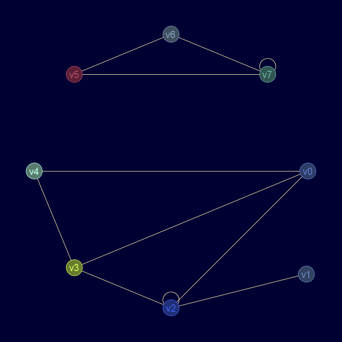
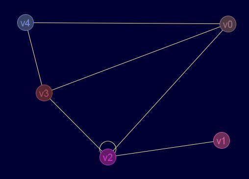
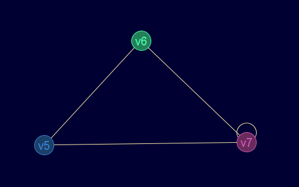
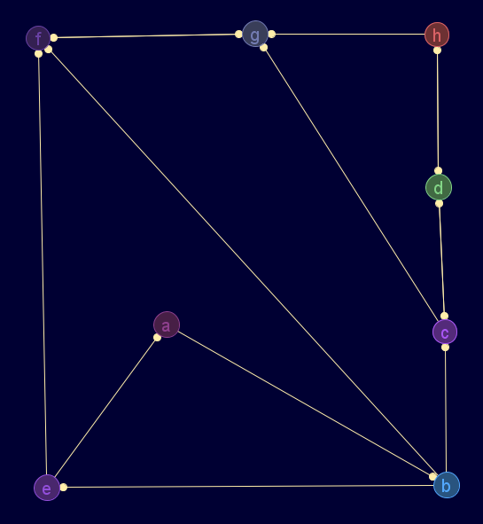
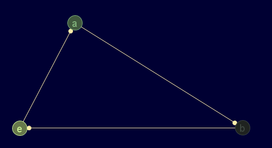
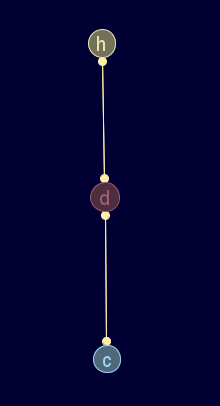
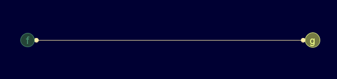

Descripción
En un grafo no dirigido, devuelve las componentes conexas, en un digrafo, las componentes fuertemente conexas mediante el algoritmo de Kosaraju.
Las componentes se devuelven como un vector de diccionarios grafo.
Cadena de entrada
gr_componentes
Cadena de salida
GRAFO.componentes
Uso
gr_componentes(<grafo>[,<método>])
<método> sólo se aplica a grafos no dirigidos, cuando vale true indica que se usará búsqueda en amplitud, false búsqueda en profundidad.
Ejemplos
gr_nuevo([[0,0,1,1,1,0,0,0],[0,0,1,0,0,0,0,0],[1,1,1,1,0,0,0,0],[1,0,1,0,1,0,0,0],[1,0,0,1,0,0,0,0],[0,0,0,0,0,0,2,1],[0,0,0,0,0,2,0,1],[0,0,0,0,0,1,1,1]],falso,falso,verdadero,verdadero)
Diccionario: { 'etiquetas': ['v0','v1','v2','v3','v4','v5','v6','v7'] 'ady': [[0,0,1,1,1,0,0,0],[0,0,1,0,0,0,0,0],[1,1,1,1,0,0,0,0],[1,0,1,0,1,0,0,0],[1,0,0,1,0,0,0,0],[0,0,0,0,0,0,2,1],[0,0,0,0,0,2,0,1],[0,0,0,0,0,1,1,1]] 'esDirigido': falso 'esPonderado': falso 'esPseudografo': verdadero 'esMultigrafo': verdadero 'nodoData': '__null__' 'aristaData': '__null__' }
Salida JMEScriptGUI con visor de grafos v0.1:

gr_componentes(gr_nuevo([[0,0,1,1,1,0,0,0],[0,0,1,0,0,0,0,0],[1,1,1,1,0,0,0,0],[1,0,1,0,1,0,0,0],[1,0,0,1,0,0,0,0],[0,0,0,0,0,0,2,1],[0,0,0,0,0,2,0,1],[0,0,0,0,0,1,1,1]],falso,falso,verdadero,verdadero))
VectorEvaluado: [ {'etiquetas'=['v0','v2','v1','v3','v4'], 'ady'=[[0,1,0,1,1],[1,1,1,1,0],[0,1,0,0,0],[1,1,0,0,1],[1,0,0,1,0]], 'esDirigido'=falso, 'esPonderado'=falso, 'esPseudografo'=verdadero, 'esMultigrafo'=verdadero, 'nodoData'='__null__', 'aristaData'='__null__'}, {'etiquetas'=['v5','v6','v7'], 'ady'=[[0,2,1],[2,0,1],[1,1,1]], 'esDirigido'=falso, 'esPonderado'=falso, 'esPseudografo'=verdadero, 'esMultigrafo'=verdadero, 'nodoData'='__null__', 'aristaData'='__null__'} ]
Salida JMEScriptGUI con visor de grafos v0.1:
 
gr_nuevo([[0,1,0,0,0,0,0,0],[0,0,1,0,1,1,0,0],[0,0,0,1,0,0,1,0],[0,0,1,0,0,0,0,1],[1,0,0,0,0,1,0,0],[0,0,0,0,0,0,1,0],[0,0,0,0,0,1,0,0],[0,0,0,1,0,0,1,0]],['a','b','c','d','e','f','g','h'],verdadero)
Diccionario: { 'etiquetas': ['a','b','c','d','e','f','g','h'] 'ady': [[0,1,0,0,0,0,0,0],[0,0,1,0,1,1,0,0],[0,0,0,1,0,0,1,0],[0,0,1,0,0,0,0,1],[1,0,0,0,0,1,0,0],[0,0,0,0,0,0,1,0],[0,0,0,0,0,1,0,0],[0,0,0,1,0,0,1,0]] 'esDirigido': verdadero 'esPonderado': falso 'esPseudografo': falso 'esMultigrafo': falso 'nodoData': '__null__' 'aristaData': '__null__' }
Salida JMEScriptGUI con visor de grafos v0.1:

gr_componentes(gr_nuevo([[0,1,0,0,0,0,0,0],[0,0,1,0,1,1,0,0],[0,0,0,1,0,0,1,0],[0,0,1,0,0,0,0,1],[1,0,0,0,0,1,0,0],[0,0,0,0,0,0,1,0],[0,0,0,0,0,1,0,0],[0,0,0,1,0,0,1,0]],['a','b','c','d','e','f','g','h'],verdadero))
VectorEvaluado: [ {'etiquetas'=['a','e','b'], 'ady'=[[0,0,1],[1,0,0],[0,1,0]], 'esDirigido'=verdadero, 'esPonderado'=falso, 'esPseudografo'=falso, 'esMultigrafo'=falso, 'nodoData'='__null__', 'aristaData'='__null__'}, {'etiquetas'=['c','d','h'], 'ady'=[[0,1,0],[1,0,1],[0,1,0]], 'esDirigido'=verdadero, 'esPonderado'=falso, 'esPseudografo'=falso, 'esMultigrafo'=falso, 'nodoData'='__null__', 'aristaData'='__null__'}, {'etiquetas'=['g','f'], 'ady'=[[0,1],[1,0]], 'esDirigido'=verdadero, 'esPonderado'=falso, 'esPseudografo'=falso, 'esMultigrafo'=falso, 'nodoData'='__null__', 'aristaData'='__null__'} ]
Salida JMEScriptGUI con visor de grafos v0.1:
  
Desde / Última modificación
v0.6.2.0